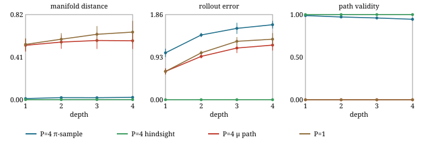

Commit, Don't Average: Multi-Hypothesis Latent Prediction for Sharp Multi-Step Futures in Text
Draft technical report
Status: draft. Method and setup sections describe the implemented code. Section 5.1 (synthetic) is filled in; the other results are placeholders (marked TODO).
Abstract
A predictor trained to minimize a distance to the future learns the conditional mean of the possible futures. When the future is uncertain, that mean is a blur: a point between the plausible outcomes that need not correspond to any of them. In a joint-embedding predictive architecture (JEPA) this blur lives in latent space, and it compounds when predictions are chained: a multi-step rollout that feeds a blurred latent back into the predictor drifts away from the latents real text produces. Recent JEPA world models for control and driving replace the single predicted successor with a finite set of candidate futures. We bring this idea to language and study what it does to multi-step rollouts. The predictor proposes \(P\) candidate future latents together with a distribution \(\pi\) over which candidate will be closest to the real future, and every prediction step commits to exactly one candidate instead of averaging. Training uses a relaxed winner-takes-all objective, and a separate detached head estimates the mean future \(\mu\), which serves as an in-model averaging reference. We train the model on FineWeb-Edu with a horizon of \(k = 20\) tokens and compare committed rollouts with the \(\mu\) path and with an otherwise identical single-candidate model (\(P = 1\)), at depths of up to four steps (80 tokens). TODO: one or two sentences with the main result, e.g. manifold distance and best-of-K rollout error at depth 4, with seeds.
1 Introduction
Regression onto an uncertain target produces an average. In video prediction this is visible as blurry frames, which motivated adversarial and multi-scale objectives that go beyond mean squared error [Mathieu et al. 2016]. The same effect applies to any predictor trained with a distance loss. Under a squared or cosine-type distance, the optimal single prediction given the context is the mean of the future, or its direction. If the future is multimodal, the mean lies between the modes.
Joint-embedding predictive architectures [LeCun 2022; Assran et al. 2023; Bardes et al. 2024] predict representations rather than raw signals. This removes the need to model unpredictable low-level detail, but it does not remove the averaging. A JEPA predictor that outputs a single latent still learns the conditional mean in latent space. For a single prediction step that may be harmless. For planning, or for generating text from a latent plan, the predictor's output is fed back in as the next input. A mean latent is then an input the encoder never produces, and each further step predicts from a point that is off the distribution of real latents.
Representing the future as a finite set of hypotheses is an established remedy [Guzman-Rivera et al. 2012; Rupprecht et al. 2017]. It has recently been brought into JEPA world models for maze navigation and driving [Song et al. 2026; Huang 2026]. Those works evaluate whether the candidate set contains the real successors and supports planning. We study a different question in a different domain: in a JEPA over text, does committing to one candidate at every step keep a multi-step latent rollout close to the latents real text produces, where averaging drifts away? The predictor proposes \(P\) candidates for the latent \(k\) tokens ahead, and a learned distribution \(\pi\) says how likely each candidate is to be the closest to the real future. A commit chooses exactly one candidate according to a policy (sampling from \(\pi\), its argmax, or, during training, the candidate closest to the real future), and the rollout continues from that candidate. Because each committed latent stands for one future rather than a mixture of all of them, we expect it to stay close to the latents real text produces, even after several steps.
The prediction mechanism is not new (Section 2). Our contributions are its application to language, the rollout analysis, and the evaluation:
- A finite-hypothesis JEPA for text over token-level latents with a \(k\)-token horizon. It has an explicit commitment step, a win-probability head \(\pi\), and a detached mean-future head \(\mu\) that provides an in-model averaging reference and a per-context uncertainty estimate (\(\lvert\mu\rvert\)) at no cost to the rest of the model.
- An evaluation protocol for multi-step latent rollouts: rollout error, manifold distance calibrated against real latents, and best-of-\(K\) rollout error. We argue that error against the single realized future is the wrong yardstick for committed rollouts (Section 4.4).
- Experiments on a synthetic two-successor Markov chain, where valid futures are known, and on FineWeb-Edu, against the \(P = 1\) baseline and ablations. TODO: adjust to what was actually run.
- A qualitative comparison of text decoded from committed plans and from the mean plan. TODO: ticket 003
2 Related work
Draft. The 2026 entries were checked against their arXiv abstracts only. Read the full papers and verify every citation before release.
Finite-hypothesis prediction in JEPA world models (closest work). Branch-JEPA [Song et al. 2026] (an earlier version is titled MoP-JEPA) replaces the point-valued JEPA transition with a context-weighted finite set of latent successors: \(K\) predictor heads and a router that sees only the context. It argues, as we do, that squared or cosine regression returns a conditional mean that may match no valid successor. Its evaluation is on maze navigation (OGBench), where it checks whether the predicted transitions form real routes, and on driving trajectories (Argoverse 2). MDN-VJEPA [Huang 2026] makes the JEPA predictor a mixture density network, keeps the full mixture instead of its mean, and studies temporally coherent multimodal trajectories and their consistency across horizons. Our candidates and \(\pi\) play the same roles as their branches and router weights or mixture components. The differences are the domain (text, with a token decoder conditioned on the latents), the explicit commitment step inside multi-step rollouts, the detached \(\mu\) head as an in-model averaging reference, and an evaluation centred on whether chained committed latents stay close to real text latents. TODO: after reading both papers in full, state the overlap and differences precisely; decide whether to add an MDN predictor as a baseline
Multiple-hypothesis learning. Producing several outputs and training only the best one is the idea behind multiple choice learning [Guzman-Rivera et al. 2012] and its stochastic variant for deep ensembles [Lee et al. 2016]. Rupprecht et al. [2017] show that a relaxed winner-takes-all loss, which also gives the non-winning hypotheses a small weight, avoids dead hypotheses. Our move loss is such a relaxation, with an annealed, distance-relative temperature and uniform smoothing. Mixture density networks [Bishop 1994] model multimodality with an explicit mixture likelihood instead. Multimodal trajectory forecasting routinely evaluates with best-of-\(K\) errors [e.g. Gupta et al. 2018], which we adopt for rollouts.
JEPA and collapse prevention. JEPAs predict a target representation from a context representation [LeCun 2022], with instances for images [Assran et al. 2023] and video [Bardes et al. 2024], and recently for language models [Huang et al. 2026]. Training against a target produced by the same encoder needs a mechanism against collapse. VICReg [Bardes et al. 2022] regularizes variance and covariance. LeJEPA's SIGReg [Balestriero and LeCun 2025] matches embeddings to an isotropic Gaussian along random projections. We use VISReg [VISReg 2026], which keeps VICReg's scale term, replaces covariance with a sliced-Wasserstein shape term toward a standard normal, and adds a centering term. We apply it to the online encoder latents.
Latent prediction and planning for language. Large Concept Models [LCM team et al. 2024] predict the next sentence embedding and report that mean-squared-error regression averages plausible continuations. They address it with diffusion in embedding space, or with residual quantization into discrete codes, which is also a form of commitment. JEPA-Reasoner [JEPA-Reasoner 2025] separates a latent JEPA reasoner from a token "talker" and deliberately keeps several hypotheses as mixed latent vectors, the opposite of our design choice. Next-Latent Prediction [NextLat 2025] and Hierarchical Latent Prediction [HiLP 2026] train language models with latent dynamics objectives, and identify compounding error in multi-step latent rollouts as the obstacle. Plan-then-generate models condition a token generator on a latent plan obtained from a VAE, diffusion or clustering (e.g. PLANNER, DGLM, Cornille et al.); PLaT [PLaT 2026] rolls out latent planning states and reads them out with a separate decoder. Our decoder is a small instance of this pattern; the plan is a sequence of committed candidates. TODO: replace the bracketed short keys with author names for VISReg, NextLat, JEPA-Reasoner, HiLP and PLaT; add the plan-then-generate primary references (or cite the survey of alternatives to next-token prediction)
Latent world models and stochastic prediction. World models learn latent dynamics and imagine in latent space [Ha and Schmidhuber 2018; Hafner et al. 2020]. Stochastic latent variables are the usual answer to multimodal futures there, and in stochastic video prediction [Babaeizadeh et al. 2018]. Blurry predictions from mean-squared error in video [Mathieu et al. 2016] are the pixel-space version of the problem we study in latent space.
3 Method
3.1 Encoder and targets
A causal transformer encoder maps tokens \(x_{1..T}\) to latents \(z_{1..T} \in \mathbb{R}^D\). The latent \(z_t\) summarizes the prefix up to \(t\). The prediction target is the encoder's own latent \(k\) tokens ahead, with gradients stopped: \(y_t = \mathrm{sg}(z_{t+k})\). There is no separate target encoder. Collapse is prevented by a regularizer on the encoder latents (Section 3.4).
3.2 Predictor: candidates, \(\pi\) and \(\mu\)
The predictor sees only \(z_t\). It expands \(z_t\) into \(P\) slots with a per-slot linear map, mixes the slots with a small non-causal transformer, and produces for each slot \(i\) a residual \(\delta_i\) and a logit. The candidates are
\[ c_i = \operatorname{RMSNorm}\big(z_t + \delta_i(z_t)\big), \qquad i = 1,\dots,P, \]normalized without a learnable gain, so every candidate lives at the scale of real latents and can be fed back into the predictor. The logits define \(\pi(\cdot \mid z_t)\), the probability that each candidate is the one closest to the real future. A separate MLP on \(\mathrm{sg}(z_t)\) outputs \(\mu\), trained to estimate \(\mathbb{E}[\hat y \mid z_t]\) with \(\hat y = y / \lVert y \rVert\). Its input is detached, so \(\mu\) only measures: \(\lvert\mu\rvert \approx 1\) when the future is predictable and shrinks when the futures diverge.
3.3 Commitment
All comparisons use the cosine distance
\[ d(a, b) = 2 - 2\cos(a, b). \]A commit applies a policy that scores the candidates and returns the highest-scoring candidate and its index. The committed future is always exactly one of the candidates, never a combination. The policies are:
- Hindsight: \(\arg\min_i d(c_i, y)\). Needs the real future, so it is only available during training and measurement.
- \(\pi\)-argmax: the most likely candidate.
- \(\pi\)-sample: a sample from \(\pi\) (Gumbel-max, with optional temperature and top-\(k\)).
- \(\mu\)-safe: the candidate with the lowest expected distance under \(\mu\). For unit vectors, \(\mathbb{E}[d(c_i, \hat y) \mid z_t] = 2 - 2\,\hat c_i \cdot \mu\).
The identity in the last item matters for interpretation. Under this distance, the best single prediction in expectation is the direction of \(\mu\), and no committed candidate can beat it on expected distance unless the future is unimodal. Commitment therefore trades expected distance for the property of being an actual future. Our evaluation is built around this trade-off (Section 4.4).
3.4 Objective
For a position with distances \(d_i = d(c_i, y)\), the soft assignment is
\[ r_i = (1 - \varepsilon)\,\operatorname{softmax}_i\!\left(-\frac{d_i}{\tau}\right) + \frac{\varepsilon}{P}, \qquad \tau = s \cdot \bar d, \]with gradients stopped through \(r\), \(\bar d\) the mean candidate distance over the batch (so the temperature is relative to the current distance scale), and \(s\) annealed geometrically from 1.0 to 0.1 over the first 30% of training. Early on every candidate shares every target; later the assignment approaches winner-takes-all. The smoothing \(\varepsilon = 0.05\) keeps every candidate receiving some gradient. The commitment loss is
\[ \mathcal{L}_{\text{commit}} = \underbrace{\sum_i r_i d_i}_{\text{move}} \; \underbrace{- \sum_i r_i \log \pi_i}_{\pi} \; + \underbrace{\lVert \mu - \hat y \rVert^2}_{\mu} \; + 0.5 \cdot \underbrace{\operatorname{mean}_{i \ne j} \big[\cos(c_i, c_j) - m\big]_+}_{\text{diversity}} \]with margin \(m = 0.5\), so only near-duplicate candidates are pushed apart. The \(\pi\) term is a cross-entropy against \(r\). It is bounded below by \(H(r)\), so we report \(\mathrm{KL}(r \,\Vert\, \pi)\) separately. The encoder is regularized by VISReg [VISReg 2026], applied to all valid encoder latents: a centering term (squared mean), a scale term (\((1 - \mathrm{std})^2\) per dimension), and a shape term (squared distance between sorted projections on 256 random directions and standard-normal quantiles). The JEPA loss is the unweighted sum of VISReg and \(\mathcal{L}_{\text{commit}}\), with all weights 1 except diversity.
3.5 Rollout
A rollout of depth \(n\) chains commits without going back to tokens: \(z^{(0)} = z_t\) and \(z^{(i)} = \operatorname{commit}(\text{predictor}(z^{(i-1)}), \text{policy})\). Each step advances the plan by \(k\) tokens, so depth 4 with \(k = 20\) plans 80 tokens ahead. The predictor is trained only on real latents. Rollout is used for evaluation only, so the experiments test whether committed latents remain usable inputs without being trained for it. The \(\mu\) path, \(z^{(i)} = \sqrt{D}\,\mu(z^{(i-1)}) / \lVert\mu(z^{(i-1)})\rVert\), is the in-model averaging reference.
3.6 Decoder and hints
A small causal token transformer with a sliding window of 32 tokens generates text. Each token position belongs to a block of \(k\) tokens. Its hint is a projection of the latent at the block start plus a projection of the committed future for that block. The hint is added to the token embeddings and re-injected before every layer through zero-initialized projections. The short window forces the decoder to take longer-range content from the hint.
During decoder training the committed future is chosen by hindsight. This is deliberate teacher forcing, and it leaks information. The hint is still a predictor output, but the choice among \(P\) candidates was made with the real future, so it carries up to \(\log_2 P = 3\) bits about it. Hints chosen by \(\pi\)-argmax carry none. Validation and all reported decoder results use \(\pi\)-argmax unless stated otherwise. The last block of a sequence has no latent \(k\) tokens ahead and is excluded from the decoder loss.
3.7 Two-stage training
The encoder and predictor are trained first (the JEPA stage). The decoder is then trained against the frozen JEPA (the decoder stage), so its hints are stable from the first step and the decoder loss cannot change the latents.
4 Experimental setup
4.1 Data
FineWeb-Edu [Penedo et al. 2024], sample-10BT, with a 32k-token
byte-level BPE tokenizer trained on a 500 MB sample. We use about 500M
tokens, split into non-overlapping chunks of 1024 tokens. Chunks shorter than
64 tokens are dropped. Whole documents are held out for validation, so no
validation chunk continues a training document.
TODO: exact token counts of the train/validation splits
4.2 Model and training
| Component | Setting |
|---|---|
| Encoder | causal, 8 layers, width 448, 8 heads, SwiGLU 896, RoPE, context 1024 |
| Predictor | reads \(z_t\) only; \(P = 8\) slots, 2 non-causal layers, width 448 |
| Decoder | 4 layers, width 448, sliding window 32, tied embeddings, per-layer hint |
| Horizon | \(k = 20\) tokens |
| Commitment loss | \(s\): 1.0 → 0.1 over 30%, \(\varepsilon = 0.05\), diversity 0.5 (margin 0.5) |
| VISReg | scale, shape, center weights 1; 256 slices |
| JEPA stage | AdamW, lr \(4\cdot10^{-4}\), batch 24, 3 epochs, wd 0.01 |
| Decoder stage | AdamW, lr \(6\cdot10^{-4}\), batch 24, 1 epoch, hindsight hints |
| Schedule | 1% linear warmup, cosine to 10% of peak; bf16; grad-norm clip 1.0 |
4.3 Baselines, ablations and seeds
| Run | Change from main | Question |
|---|---|---|
| Main | — | — |
| \(P = 1\) | one candidate | Does committing among several candidates beat a single prediction? |
| \(P = 4\) | four candidates | Sensitivity to \(P\) |
| No annealing | \(s\) fixed at 0.1 | Does annealing prevent dead candidates? |
| No diversity | diversity weight 0 | Is the diversity term needed? |
| Decoder: \(\pi\)-argmax hints | decoder trained on \(\pi\)-argmax hints | Cost and benefit of hindsight teacher forcing |
| MDN predictor (optional) | mixture density predictor, as in MDN-VJEPA | Finite candidates vs a mixture likelihood TODO: decide; needs code |
4.4 Metrics
- Rollout error at depth \(i\): \(d(z^{(i)}, z_{t+ik})\), the distance to the latent of the real continuation.
- Best-of-\(K\) rollout error: the lowest error over \(K\) independent \(\pi\)-sample rollouts, with whole trajectories compared (ticket 005).
- Manifold distance: the distance from a rollout latent to
its nearest neighbor in a bank of 50k encoder latents from training
documents (disjoint from the query documents). A
realrow measures the same quantity for the real future latents and calibrates what "on the manifold" means. It never compares against the realized continuation, so a rollout on another plausible branch is not penalized. - Path validity and branch entropy (synthetic only, where the valid transitions are known).
- Decoder cross-entropy under different hints: \(\pi\)-argmax, \(\pi\)-sample, \(\mu\)-safe, hindsight, real block latent (leaky upper bound), shuffled, and null.
Why rollout error alone is the wrong yardstick. By the identity in Section 3.3, the mean direction minimizes the expected distance to the realized future. Plain rollout error therefore favours averaging by construction: a committed rollout that follows a plausible but unrealized branch is penalized as if it were wrong. We report rollout error, but the claim is evaluated on (a) manifold distance, which asks whether the rollout is a future at all, (b) best-of-\(K\) error, which asks whether the committed futures include the real one, and (c) hindsight rollout error, which asks whether following the real branch stays accurate over several steps.
4.5 Hypotheses (fixed before the experiments)
"\(A\) is lower than \(B\)" means the per-seed difference \(B_s - A_s\) is positive for every seed and its mean exceeds its standard deviation. Rollout paths from one run are paired directly; \(P = 1\) runs are paired with the main run of the same seed.
real row: \((m_{\text{base}} - m_\pi)/(m_{\text{base}} - m_{\text{real}}) \ge 0.5\), with \(m_{\text{base}} = \min(m_\mu, m_{P=1})\).If a hypothesis fails, we report it as failed. We do not change the metric after seeing the results.
5 Results
5.1 Synthetic: a two-successor Markov chain
Eight states at the latent scale (\(D = 32\)), each with two equally likely successors. A predictor with \(P = 4\), and one with \(P = 1\), are trained with the commitment loss on (state, successor) pairs, 400 steps, five seeds (each seed draws its own world). Here the valid futures are known exactly, so this experiment isolates the mechanism from the difficulty of text. Rollouts start from 1,024 sampled real paths per seed; a rollout step is real when it lies on a state (distance \(< 0.1\)) that is a successor of the previous step's state. The \(P = 1\) model has one candidate, so its hindsight, \(\pi\)-argmax and \(\pi\)-sample rollouts are the same rollout (its \(\mu\) path is a separate head and differs).
Committed rollouts are real futures; averaged ones are not. \(P = 4\) rollouts stay on the states at every depth: \(\pi\)-argmax and hindsight are valid paths in every case, and \(\pi\)-sample in 94.5% of cases at depth 4. The \(\mu\) path and the \(P = 1\) model leave the states at the first step (manifold distance \(\approx 0.5\)) and never form a valid path. The \(P = 4\) model covers both successors of every state (mode coverage \(0.005 \pm 0.004\), against \(0.931 \pm 0.104\) for \(P = 1\)), and \(\pi\)-sample splits evenly between them (branch entropy \(0.994 \pm 0.002\) bits; ideal 1). The ~1% of depth-1 \(\pi\)-samples that land on no successor come from the little mass \(\pi\) puts on the two spare candidates; this is the small loss of validity. In both models \(\mu\) regresses onto the same unit successors, and \(\lvert\mu\rvert \approx 0.69\) is close to the \(1/\sqrt{2}\) of the mean of two near-orthogonal ones.
Rollout error favours the mean, as Section 4.4 predicts. Against one sampled real path, the \(\mu\) path and the \(P = 1\) model have lower rollout error than committed \(\pi\) rollouts at every depth (e.g. \(1.20\) and \(1.32\) against \(1.64\) at depth 4): a committed rollout that takes the other branch is counted as wrong. Following the real branch (hindsight) keeps the error at \(0.001\) through depth 4, so the committed candidates contain the real path at every step (H3 on this world).
| Model / path | depth 1 | 2 | 3 | 4 |
|---|---|---|---|---|
| Manifold distance (lower is closer to a real state) | ||||
| \(P = 4\), \(\pi\)-sample | 0.012 ± 0.004 | 0.021 ± 0.005 | 0.020 ± 0.006 | 0.023 ± 0.003 |
| \(P = 4\), \(\pi\)-argmax | 0.001 ± 0.000 | 0.001 ± 0.001 | 0.001 ± 0.001 | 0.002 ± 0.001 |
| \(P = 4\), hindsight | 0.001 ± 0.000 | 0.001 ± 0.000 | 0.001 ± 0.001 | 0.001 ± 0.001 |
| \(P = 4\), \(\mu\) path | 0.526 ± 0.061 | 0.557 ± 0.065 | 0.573 ± 0.082 | 0.570 ± 0.079 |
| \(P = 1\) | 0.535 ± 0.060 | 0.585 ± 0.058 | 0.632 ± 0.079 | 0.654 ± 0.108 |
| Path validity (fraction of rollouts that are real paths) | ||||
| \(P = 4\), \(\pi\)-sample | 0.988 ± 0.005 | 0.972 ± 0.011 | 0.960 ± 0.016 | 0.945 ± 0.019 |
| \(P = 4\), \(\pi\)-argmax | 1.000 ± 0.000 | 1.000 ± 0.000 | 1.000 ± 0.000 | 1.000 ± 0.000 |
| \(P = 4\), hindsight | 1.000 ± 0.000 | 1.000 ± 0.000 | 1.000 ± 0.000 | 1.000 ± 0.000 |
| \(P = 4\), \(\mu\) path | 0.000 ± 0.000 | 0.000 ± 0.000 | 0.000 ± 0.000 | 0.000 ± 0.000 |
| \(P = 1\) | 0.000 ± 0.000 | 0.000 ± 0.000 | 0.000 ± 0.000 | 0.000 ± 0.000 |
| Rollout error (distance to the sampled real path) | ||||
| \(P = 4\), \(\pi\)-sample | 1.026 ± 0.091 | 1.416 ± 0.047 | 1.561 ± 0.122 | 1.641 ± 0.083 |
| \(P = 4\), \(\pi\)-argmax | 1.019 ± 0.126 | 1.350 ± 0.134 | 1.532 ± 0.190 | 1.586 ± 0.142 |
| \(P = 4\), hindsight | 0.001 ± 0.000 | 0.001 ± 0.000 | 0.001 ± 0.001 | 0.001 ± 0.001 |
| \(P = 4\), \(\mu\) path | 0.621 ± 0.066 | 0.948 ± 0.044 | 1.131 ± 0.110 | 1.195 ± 0.118 |
| \(P = 1\) | 0.620 ± 0.066 | 1.026 ± 0.045 | 1.278 ± 0.093 | 1.324 ± 0.135 |

5.2 Representation and predictor health
Before interpreting rollouts, we check that the encoder has not collapsed and
that the candidates are used:
effective rank of the latents, VISReg terms, candidate usage (live and
effective slots), \(\pi\)'s gain in nats over a constant distribution, and
\(\mu\) calibration (measured \(\mu\)-direction distance against
\(2 - 2\lvert\mu\rvert\)).
TODO: table from python -m jepa measure --json (sections representation, loss, heads)
5.3 Rollouts on FineWeb-Edu
| Path | depth 1 | 2 | 3 | 4 |
|---|---|---|---|---|
| Manifold distance (lower is closer to real latents) | ||||
real (calibration) | TODO | |||
| \(\pi\)-sample | TODO | |||
| \(\pi\)-argmax | TODO | |||
| \(\mu\) path | TODO | |||
| \(P = 1\) model | TODO | |||
| Rollout error (distance to the real continuation's latent) | ||||
| hindsight | TODO | |||
| best-of-16 \(\pi\)-sample | TODO | |||
| \(\pi\)-sample | TODO | |||
| \(\mu\) path | TODO | |||
| \(P = 1\) model | TODO | |||
5.4 Does the decoder use the committed future?
| Hint | Token CE (nats) |
|---|---|
| \(\pi\)-argmax | TODO |
| \(\pi\)-sample | TODO |
| \(\mu\)-safe | TODO |
| hindsight (teacher forcing) | TODO |
| real block latent (leaky upper bound) | TODO |
| shuffled | TODO |
| null | TODO |
5.5 Decoded plans: committed vs mean
For fixed, seeded validation prompts, we plan four blocks ahead in latent space and decode each plan greedily, without re-encoding. We compare \(\pi\)-sample plans (three samples), the \(\pi\)-argmax plan, the \(\mu\) plan, the \(P = 1\) model's plan, and the real continuation. The decoder was trained on committed candidates, so decoding the \(\mu\) plan is out of distribution for it. The \(P = 1\) model, whose decoder was trained on its own single prediction, is the fair comparison. TODO: ticket 003
5.6 Ablations
TODO: one table, main metric (depth-4 manifold distance and best-of-16 error) per ablation in Table 2, plus live slots
6 Discussion
Sharp is not the same as right. A committed rollout can be a perfectly valid future and still not be the one that happened. Section 3.3 shows that on expected distance the mean wins by construction. The useful property of commitment is that the rollout remains a future the model can continue from, and that many such rollouts together cover the real continuation. TODO: discuss in light of Tables 3–4
What \(\mu\) adds. \(\mu\) is free: its input is detached, so it does not change the encoder or the candidates. It gives a per-context measure of how divergent the futures are (\(\lvert\mu\rvert\)), and an in-model answer to "what would a single prediction have done", without training a second model. TODO: relation between |μ| and the gap between committed and μ rollouts, per context
Candidate usage. In earlier runs only a few of the eight
candidates won regularly. Annealing and the margin-based diversity term target
this. TODO: report live/effective slots; link to the head-growth direction in docs/vision.md
7 Limitations
- One small model scale and one horizon (\(k = 20\)). TODO: compute budget
- Rollouts are evaluated, not trained: the predictor never sees its own outputs as inputs. A multi-step training loss is a natural extension.
- Decoder training uses hindsight hints, which carry up to 3 bits about the real future per block. Reported decoder numbers use \(\pi\)-argmax hints.
- Manifold distance uses a finite bank of real latents (50k). Distances shrink as the bank grows, so only comparisons at a fixed bank size are meaningful.
- The target is the encoder's own latent with gradients stopped and no EMA target encoder; we do not compare target choices.
- The quality of decoded text is judged qualitatively.
8 Conclusion
TODO: write after the results. Three sentences: what was tested, what was found (including failures), what it suggests next.
Reproducibility
Code: TODO: repository URL and commit. Commands:
python -m jepa train-tokenizer
python -m jepa prepare-data
python -m jepa train # JEPA stage
python -m jepa train --stage decoder --from runs/jepa # decoder stage
python -m jepa measure --model runs/jepa-decoder --json runs/jepa-decoder/metrics.json
python docs/report/synthetic.py # Section 5.1: synthetic.json, synthetic.svgVariant runs (P = 1, ablations, seeds) need ticket 002.
References
Draft list. Check every entry against the original before release.
- Assran, M., et al. (2023). Self-Supervised Learning from Images with a Joint-Embedding Predictive Architecture. CVPR.
- Babaeizadeh, M., et al. (2018). Stochastic Variational Video Prediction. ICLR.
- Balestriero, R., LeCun, Y. (2025). LeJEPA: Provable and Scalable Self-Supervised Learning Without the Heuristics. arXiv.
- Bardes, A., Ponce, J., LeCun, Y. (2022). VICReg: Variance-Invariance-Covariance Regularization for Self-Supervised Learning. ICLR.
- Bardes, A., et al. (2024). Revisiting Feature Prediction for Learning Visual Representations from Video (V-JEPA). arXiv.
- Bishop, C. M. (1994). Mixture Density Networks. Technical report, Aston University.
- Gupta, A., et al. (2018). Social GAN: Socially Acceptable Trajectories with Generative Adversarial Networks. CVPR.
- Guzman-Rivera, A., Batra, D., Kohli, P. (2012). Multiple Choice Learning: Learning to Produce Multiple Structured Outputs. NeurIPS.
- Ha, D., Schmidhuber, J. (2018). World Models. arXiv / NeurIPS.
- Hafner, D., et al. (2020). Dream to Control: Learning Behaviors by Latent Imagination. ICLR.
- [HiLP 2026] Hierarchical Latent Prediction for Language Models. arXiv:2608.05806. TODO: authors
- Huang, H., LeCun, Y., Balestriero, R. (2026). LLM-JEPA: Large Language Models Meet Joint Embedding Predictive Architectures. ICLR. arXiv:2509.14252.
- Huang, Y. (2026). MDN-VJEPA: Multimodal Probabilistic Joint-Embedding World Models. arXiv:2610.13956.
- [JEPA-Reasoner 2025] JEPA-Reasoner: Decoupling Latent Reasoning from Token Generation. arXiv:2512.19171. TODO: authors
- LCM team, Barrault, L., et al. (2024). Large Concept Models: Language Modeling in a Sentence Representation Space. arXiv.
- LeCun, Y. (2022). A Path Towards Autonomous Machine Intelligence. OpenReview position paper.
- Lee, S., et al. (2016). Stochastic Multiple Choice Learning for Training Diverse Deep Ensembles. NeurIPS.
- Maddison, C. J., Tarlow, D., Minka, T. (2014). A* Sampling. NeurIPS. (Gumbel-max sampling.)
- Mathieu, M., Couprie, C., LeCun, Y. (2016). Deep Multi-Scale Video Prediction Beyond Mean Square Error. ICLR.
- [NextLat 2025] Next-Latent Prediction Transformers Learn Compact World Models. arXiv:2511.05963. TODO: authors
- Penedo, G., et al. (2024). The FineWeb Datasets: Decanting the Web for the Finest Text Data at Scale. arXiv.
- [PLaT 2026] Latent Chain-of-Thought as Planning: Decoupling Reasoning from Verbalization. arXiv:2601.21358. TODO: authors
- Rupprecht, C., et al. (2017). Learning in an Uncertain World: Representing Ambiguity Through Multiple Hypotheses. ICCV.
- Song, Z., et al. (2026). Branch-JEPA: Finite-Support Predictive Distributions for JEPA World Models. arXiv:2607.05238 (v1/v2 titled MoP-JEPA).
- [VISReg 2026] VISReg: Variance-Invariance-Sketching Regularization for JEPA Training. arXiv:2606.02572. TODO: authors
- TODO: plan-then-generate primary references (PLANNER, DGLM, Cornille et al.) or the survey "Alternatives to Next Token Prediction in Text Generation" (arXiv:2509.24435)